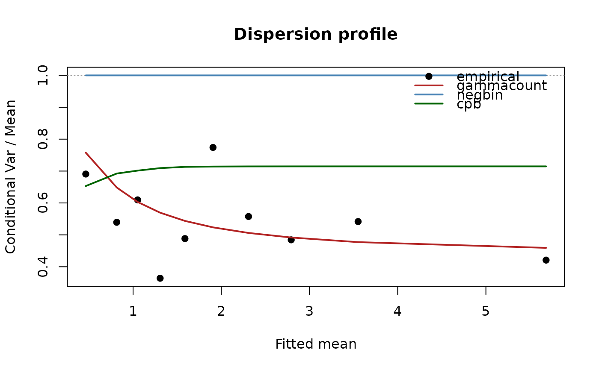

Dispersion profile: variance-to-mean ratio against the fitted mean
Source:R/dispersion_profile.R
dispersion_profile.RdBins the observations by the fitted mean of the first model, computes the
empirical conditional variance-to-mean ratio in each bin (the mean of the
Pearson contributions \((y_i - \hat\mu_i)^2/\hat\mu_i\)), and sets it
against the ratio each fitted family implies at those means. The families
differ in how their dispersion moves with the mean: the CPB and the Katz
family hold it essentially constant (at alpha and delta; the implied
curves are the exact moments of the fitted pmf, so the renormalized CPB's
ratio dips a little below alpha where the ceiling is only two or three),
the COM-Poisson, gamma-count, and double Poisson approach a constant only as
the mean grows and rise toward the Poisson at small means, and the negative
binomial's ratio rises linearly. The profile therefore
shows which mechanism the data follow, where a family's variance function
fails, and whether the observed underdispersion is confined to a range of
means. Zero-truncated fits are profiled on their conditional moments.
Usage
dispersion_profile(
object,
...,
bins = 10,
plot = TRUE,
ylim = NULL,
main = "Dispersion profile",
xlab = "Fitted mean",
ylab = "Conditional Var / Mean"
)
# S3 method for class 'dispersion_profile'
plot(
x,
ylim = NULL,
main = "Dispersion profile",
xlab = "Fitted mean",
ylab = "Conditional Var / Mean",
...
)Arguments
- object
A fitted single-equation model (
cpb,cpb_fe,gec,gec_fe, orcount_reg); its fitted means define the bins and the empirical ratio.- ...
Further fitted models on the same data, whose implied ratios are added as columns (name them for readable labels).
- bins
Number of equal-frequency bins by fitted mean (default 10).
- plot
Draw the profile (default
TRUE); the table is returned invisibly either way.- ylim, main, xlab, ylab
Plot settings.
- x
A
"dispersion_profile"table.
Value
A data frame of class "dispersion_profile" with one row per bin:
bin, n, mean_fitted, mean_y, ratio_empirical, and one
ratio_<model> column per fitted model.
Examples
set.seed(4); n <- 600; x <- rnorm(n)
d <- data.frame(y = rgammacount(n, exp(0.8 + 0.6 * x), alpha = 2.5), x = x)
m_gc <- count_reg(y ~ x, d, family = "gammacount")
m_nb <- count_reg(y ~ x, d, family = "negbin")
m_cp <- cpb(y ~ x, d, truncated = FALSE, se = "none")
dispersion_profile(gammacount = m_gc, negbin = m_nb, cpb = m_cp)
